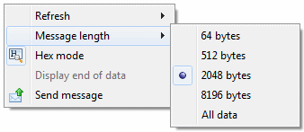
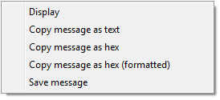

If the data queue is configured to include the sender ID for posted messages, the sender ID is displayed in a separate column. But the length column always displays the complete message length, including the sender ID. That is exactly what the Retrieve Data Queue Message (QMHRDQM) API returns. A separate key column is added for keyed data queue.
Please notice the view menu with options to customize retrieving messages:

The available options are:
| Refresh | - | Opens a sub menu with options to specify the time interval the view is automatically refreshed. |
| Message length | - | Opens a sub menu with options to specify the maximum number of message bytes that are retrieved. |
| Hex mode | - | Toggles the display mode between Hex and Text mode. |
| Display end of data | - | Optionally adds an end-of-data indicator to the message data. |
The following options are available for a selected message queue entry:

| Display | - | Displays the selected message(s). |
| Copy message as text | - | Copies the message text as displayed in the table to the clipboard. |
| Copy message as hex | - | Copies the message text as a string of hex values to the clipboard. |
| Copy message as hex (formatted) | - | Copies the message text as a string of hex values to the clipboard. The text is formatted into packages for easier reading. |
| Save message | - | Saves the pure message bytes, without key and sender ID, as received from the host to a file. |
The message viewer is started with a double-click on a message or from the context menu of one or more selected messages.

The Previous and Next buttons at the bottom of the viewer let you move forth and back in the list of messages. The operation mode of these buttons depends on how the viewer was started:
| Double-click | - | The buttons operate on all messages of the list. |
| Context menu | - | The buttons move forth and back within the selected messages. |
If the actual message size exceeds the maximum message length specified for retrieving messages, a data truncation warning is displayed at the bottom of the view:

If you see that message, you may consider to increase the 'Message length' value and refresh the view, in order to get the complete messages. But keep in mind that you may need to decrease the 'Number of messages' being retrieved at the same time, to avoid downloading to much data to your PC.
Use the 'Display end of data option' to add a '«' character to the end of the message data. This option might be useful for message data with trailing spaces or any other invisible characters:

In hex-mode the message data is displayed as a string of hex values: